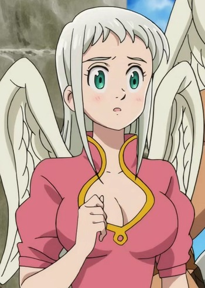
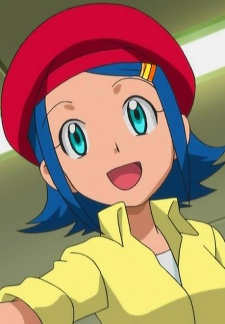
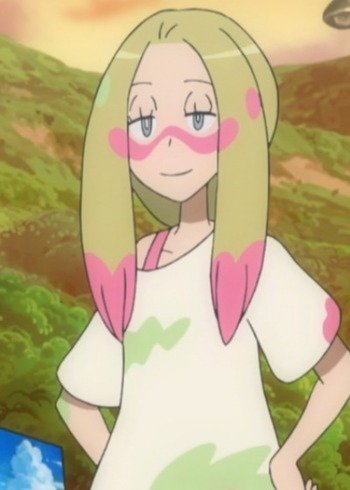

|
Asuna Yuuki |
- Sword Art Online
- Sword Art Online: Sword Art Offline
- Sword Art Online: Extra Edition
- Sword Art Online: Extra Edition - Sword Art Offline
- Sword Art Online II
- Sword Art Online II: Debriefing
- Sword Art Online II: Sword Art Offline
- Sword Art Online Movie: Ordinal Scale
- Sword Art Online: Alicization
- Sword Art Online: Alicization - Reflection
- Sword Art Online: Alicization - War of Underworld
|
Asuna or Asuna Yuuki is a friend of Kirito and a sub - leader of the guild Knights of the Blood. She is skillful player who has extraordinary rapier skill that is lighting fast. She is kind and helpful young woman who cannot abondon another in trouble. She is good at cooking. |
|  |
Ellatte |
- The Seven Deadly Sins Movie: Prisoners of the Sky
|
Ellatte is a member of the Celestial Clan. She is the complete opposite of Elizabeth. Ellatte is the fiance of Solaad. |
|  |
Jessica |
|
Jessica is a Pokemon groomer who works and tutored under her master, Sherman. She is assigned a Furfrou that does not care or approve for her. |
|  |
Mina |
|
Mina is a Pokemon Trainer who specializes in Fairy-types Pokemon. She is often relaxed as spends her days painting scenic landscapes from her travelsShe has astute eye fro detail and appreciates as asrtist's individual style. She can interpret the emotions of Pokemon. Underneath her calm demeanor, she has a fierce competitive streak. |